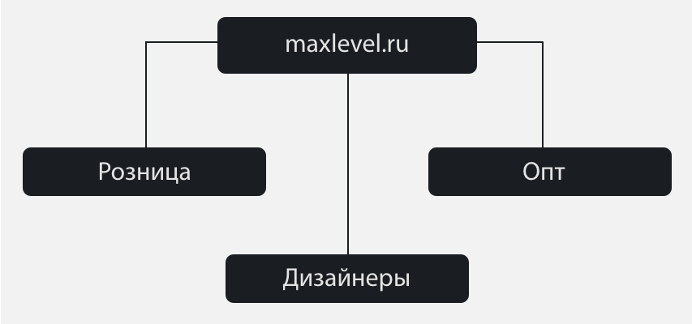
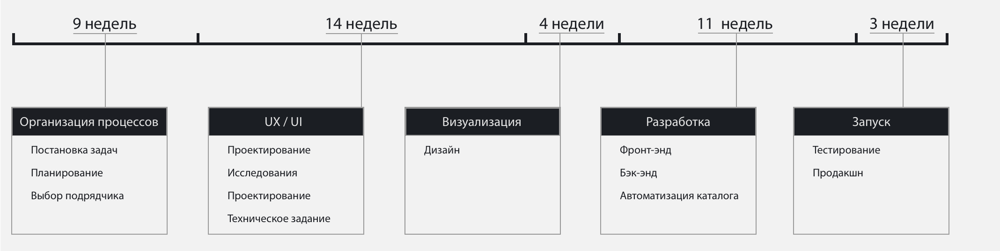
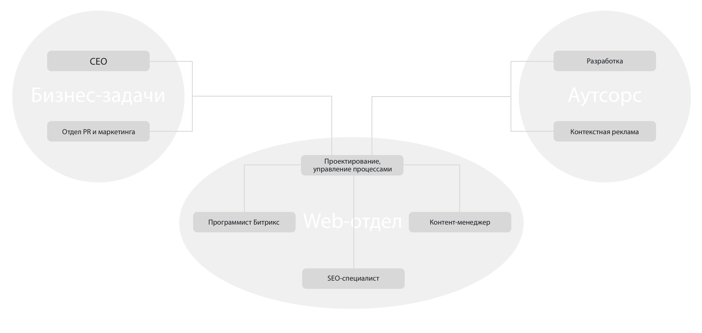
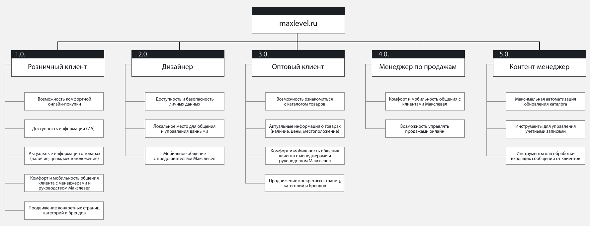

‘‘Как редизайн помог увеличить конверсию‘‘
или
‘‘Пусть на Главной будет 16 баннеров и собачка, как у Евросети, бегает‘‘.
Я расскажу вам о своем опыте проектирования maxlevel.ru. О создании проекта небольшой командой внутри компании: о планировнии, о взаимодействии с бизнесом и с пользователями, об исследованиях и полученном опыте, об усвоенных знаниях и новом опыте.
Изначально Макслевел был информационным ресурсом, где можно было просмотреть товары, которые есть сейчас в бутиках; узнать, в каком именно бутике и какое количество данного товара в наличии; ознакомиться с сервисом: заказ, оплата, доставка, установка и проч.
Макслевел имел на сайте в начале 2013 года неполный каталог, товарные позиции в который вносились руками. Заказывать с сайта можно было только по телефону, что в 2013 по меньшей мере, было странным. Спецпредложения не имели нормальной категоризации и были размещены, как придется.
Предстояло решить несколько бизнес-задач:
Было решено сделать новый дизайн, так как последний раз сайт обновлялся в 2008-2009 годах.
Клиенты должны максимально комфортно получить информацию о товарах и иметь возможность заказать их онлайн.
Сделать загрузку товарных позиций автоматической, как и изменение цен в каталоге.
Дизайнеры являются посредниками между некоторыми клиентами и Макслевелом, поэтому их работу с компанией нужно было систематизировать, отследить и сделать максимально комфортной относительно различной информации.
Оптовый отдел Макслевела очень долгое время не имел нормальных условий для продвижения своей продукции на сайте, поэтому бизнес хотел сделать данный отдел более заметным и продаваемым.
И, конечно, увеличение конверсии – задача, которая всегда входит в ТОП 3 требований любого клиента.
На основе всех поставленных задач, ресурс нужно было преобразовать в портал, который должен работать с тремя основными каналами сбыта:
При этом на все три канала тайм-план у нас был общий. Так как работали мы по «водопаду», это отразилось на рисках и сроках этапов:
‘‘ ... Очень много времени ушло на планирование: топ-менеджеры хотели реализовать те примеры, что им нравились. Больше всех запомнилось требование: нам нужно 16 баннеров на Главной, как у (название компании-конкурента) и пусть будет какая-то динамика на сайте.. пусть собачка, как у Евросети, бегает ... ‘‘
Пока мы собирали бизнес-требования, параллельно формировалась команда проекта.
Нам нужен был свой разработчик, который работал бы на нашей стороне. Так же нам понадобился SEO-специалист, потому что работа компании-аутсорса была в этом плане провальной, не несла пользы для Макслевела, но регулярно присылала акты на оплату.
И, конечно, контент – основа сайта. Не смотря на то, что мы хотели автоматизировать каталог, контента было много, поэтому возникла необходимость в контент-менеджере.
Через месяц от начала запуска проекта, мы определились со структурой и взаимодействием внутри компании и с реализацией решений во вне:
Моя роль заключалась в проектировании и управлении процессами web-отдела, а так же во взаимодействии с бизнесом и аутсорс-разработкой.
Чтобы понять, насколько нужны 16 баннеров на Главной и собачка, мы решили узнать, кто же в действительности наш пользователь и что ему нужно на нашем сайте.
По прошествию нескольких недель наблюдений и опросов, мы получили такие результаты:
Оказалось, что основное пользовательское требование –корректная, насколько это возможно, полная информация о товаре.Особенно важно это требование для товаров Макслевела – множество товаров являются уникальными, что так же отражается на доступности информации о данных товарах.
Так как на существующем сайте цены менялись руками, то очень часто бывали случаи дезинформации клиентов относительно цены на тот или иной товар. Это отражалось на отношении к Макслевелу, как к бренду, и носило негативный характер со стороны пользователей.
Сервис оказался в опеределенный момент «ахиллесовой пятой» компании: малоинформативные статьи на сайте не давали пользователю действительно нужной инфомарции относительно действий в случае проблем с купленными товарами. Не было возможности мобильно донести такие проблемы до представителей компании, что повлекло следующее требование - долгий фидбек.
Пользователи сталкивались с тем, что не могли самостоятельно решить какие-то конфликтные ситуации на месте (доставка, установка, содержание товара, брак) и это вызывало негатив и возражения, иногда даже возвраты товара, чтобы в системе логистики крайне убыточно, так как многие товары привозятся под заказ.Поэтому нужно было решение для того, чтобы ускорить фидбек от представителей Макслевела и предупредить подобные случаи.
Конечно же, сценариев для Главной страницы было несколько. Но основной был заточен строго под задачи бизнеса с комфортом для пользователя:
Несколько точек входа в каталог должны быть равномерно распределены по Главной странице, таким образом, чтобы пользователь при прохождении через весь лонгрид, мог комфортно перейти в каталог из любого информационного блока.
Скорее вопрос «зачем?», если можно разбить тематику баннеров на категории и отсюда уже, путем наследования, распределить информацию по группам, а группы по зонам страницы: для этого был сделан акционный счетчик и блок «Спецпредложения».
Спецпредложения – это квест «впихнуть невпихуемое» таким образом, чтобы пользователь все нашел, а Главная не стала мусорной корзиной. Мы сделали слайдер с табами, куда распределили все спецпредложения – теперь каждое спецпредложение обрело свою категорию.
Главная страница, карточка товара и иерархия каталога – являлись для нас приоритетными в проектировании. Сценарии для них разрабатывались совместно со специалистами: бренд-менеджерами, категорийщиками, менеджерами по продажам. Это помогло не отрываться от действительности: понимать, что ищет, чем интересуется пользователь.
Проработав зональность, определив основные сценарии и, регулярно общаясь с бизнесом и пользователями, выяснили, что уязвимое место на Главной – зона спецпредложений. Не хотелось делать лонгрид огромным, да и утяжелять визуальную составляющую кучей картинок – так же не было желания (предугадать реакцию пользователя на подобный ход легко), а пообщавшись с пользователем, мы укрепились в мысли о минимизации пространства для спецпредложений.
Долгое время не было приемлимого решения, поэтому мы стали генерировать гипотезы о том, какие вид и моторику могут иметь спецпредложения, если у нас есть для них всего 1,5 экрана.
Счетчик забирал у нас половину отведенной зоны, поэтому во второй половине нужно было разместить 85-90% всех акционных предложений.
Идея не пришла внезапно, хотя были три инсайта, которые определили будущий паттерн:
Спецпредложения нужно было сгруппировать. Пока мы это делали, у нас в одном из кабинетов, где мы вели обсуждения, пылился внушительный пантон. В определенный момент к нам зашел дизайнер отдела маркетинга, взял пантон, и мы задали ему, на волне нашего обсуждения, вопрос о цветах и о том, как они «сгруппированны».Дизайнер вкратце ответил, и это на время забылось.
Мы часто бывали на обсуждениях в переговорке на первом этаже здания, которое занимает Макслевел. Чтобы пройти в переговорку, нужно пройти через экспозиции мебели и кухонь, где можно было увидеть выставочные образцы, каталоги, стенды с образцами материалов. Кто-то из коллег обратил наше внимание на стенды и сравнил их с каталогами, у которых есть закладки или «мини-ярлыки».
В определенный момент, на одном из обсуждений с представителем аутсорса разработки, пантон, стенды и ярлыки всплыли в памяти и мы, нарисовав от руки несколько скетчей, пришли к паттерну с табами.Относительно визуализации - это не самое изящное решение, но относительно пользовательской моторики, мы учли максимум факторов.
Мы использовали несколько типов исследований в процессе редизайна maxlevel.ru.
По объективным причинам, я не смогу описать их так подробно, как бы мне хотелось, но я все равно расскажу о них, хотя бы в общих чертах.
Мы проводили наблюдения скрыто (наблюдали в бутиках за поведением и обсуждениями клиентов), и явно – сплит-тесты. Сплит-тесты коснулись в основном Главной страницы, карточки товара, выдачи в каталоге (когда нужно было понять: в каком вью и в каком количестве показывать товарную выдачу на старницах каталога).
Мы проводили интервьюирование с «экспертами» (продавцы, бренд-менеджеры, топ-менеджеры), а так же общались с наиболее контактными клиентами. Фокус-группа и панельное исследование проводились, как внутри компании, так и вне. Анкетирование очное было единовременным, а заочное – клиенты могут в любое время заполнить анкету на сайте.
Это очень важный проект для меня, так как именно он дал мне очень большую зону ответственности и научил не просто взаимодействовать с коллективом, но стараться помнить о потребностях коллег.
Макслевел дал полноценное развитие мне, как проектировщику, потому что прошлые сайты проектировались мной частично. Это был этап проб и ошибок, который дал понимание, как работать с рисками, как исправлять свои и чужие ошибки максимально быстро и эффективно, принимать решения, нести ответственность за свои решения и за действия команды.
До этого похожим проектом был только сайт компании Мосцветторг, но там решались другие задачи и не было определенного уровня приватности для одного из отделов, что дало мне больше знаний о создании личных кабинетов и движении информации в них.
Прошлый опыт не давал возможности применения HCD на практике, потому что многие из заказчиков симулировали UX и желание помочь пользователю.
Потрясающее ощущение удовлетворения, когда ты проводишь исследование, получаешь фидбек, внедряешь результаты исследования в интерфейс и видишь метрики или отзывы пользователей – ты можешь последовательно отследить улучшения.
Инсайты - это собирательное решение. Искать проектные решения в окружающих вещах – интересно.
Бесконечные брейнштормы же могут быть бесполезными и съедать ваше проектное время.
Нужно учиться «разбирать коробку».
Этот проект в полной мере мне показал, что если вы не умеете посмотреть на задачу с нескольких позиций, вы не сможете эффективно проектировать/управлять/создавать.
Дивергентное мышление требует развития, требует мотивации.
Уметь нести ответственность за риски – этому тоже стоит учиться: честность, аргументация, другое проект-решение – все это поможет проекту более существенно, чем бюрократия и взаимные претензии.
Когда ты изучаешь что-то на практике - это наилучший из способов запомнить то, что ты узнал.
Это касалось всем знаний полученный в период работы над данным проектом.
Полезный опыт отбора специалистов в команду: подбор таким образом, чтобы не только специалист, как отдельная единица, имел необходимый скилл и выдавал максимум КПД, но и взаимодействие единиц в системе было по максимуму высокоэффективным.
Три важных правила:
1. Ставьте грамотно задачу и вы получите наиболее ожидаемый результат.
2. Делегируйте часть своих задач специалистам.
3. Всегда берите отстветственность за действия команды.
Благодаря этому проекту, я:
- изучила софт более детально (Balsamiq Mockups, Axure);
- прочла большую часть базовой теории в лице Раскина, Купера, Нильсена, Нормана;
- поработала по «водопаду», с разбивкой на более мелкие итерации для более эффективного отслеживания работ по задачам.
Как итог, я выделила для себя три важных аспекта:
Задачи бизнеса и задачи пользователя могут конфликтовать: бизнес хочет множество баннеров, чтобы в каталоге открывались сразу все подкатегории, а завтра решит, что фото в карточках должно быть одно.Пользователю для комфорта нужно обратное. Собственно, конфликт не в самих задачах, а в непонимании отдельных лиц относительно тех проект-решений, которые они генерируют. И этот конфликт можно решить аргументацией и конкретикой гибких проект-решений на основе пула всех задач: пользователя, бизнеса, разработки.
Изначально на этап проектирования было отведено 8 недель. Но конфликты задач спровоцировали дополнительные исследования и вопросы, которые требовали решения. Таким образом, я неверно оценила этап и не заложила изначально период для минимизации рисков. Этап затянулся на 14 недель, что увеличило общие сроки проекта на 1,5 месяца. Но мой личный конфликт: «не доделать, но уложиться в сроки» был разрешен – я лучше приму факт того, что планирование было неверным и понесу ответственность, чем отдам пользователю «сырой» продукт.
Это был очень сильный опыт – он научил меня управлять эмпатией и эмоциями, рассказал мне о моих личностных качествах. Этот опыт помог мне реализовать теорию на практике и увидеть свои ошибки. Помог мне лучше понять людей, с которыми я работала прежде и работаю сейчас. Я и ранее имела опыт управления малой группой, но не на стороне заказчика - это было новое для меня взаимодействие.